Sobre mí
Soy Licenciada en Terapia Física y Rehabilitación comprometida con el bienestar físico y la recuperación funcional de cada paciente. Mi objetivo es brindar una atención profesional, cercana y personalizada, enfocada en aliviar el dolor, mejorar la movilidad y elevar la calidad de vida.
Servicios
- ✔️ Rehabilitación física para lesiones y cirugías
- ✔️ Terapia personalizada según tus necesidades
- ✔️ Masoterapia para aliviar tensión y dolor muscular
- ✔️ Prevención y tratamiento de lesiones
Experiencia
Fisioterapeuta
Casos tratados:
- Parálisis facial
- Estimulación temprana
- Esguinces
- Artritis
- Post quirúrgicos
- Fracturas
- Luxaciones
Estimulación y lesiones
Patologías específicas:
- Hidrocefalia
- Microcefalia
- Valgo de rodillas / tobillos
- Varo de rodillas / tobillos
- Pie plano
- Autismo
- Síndrome de Down
- PCI
Trabajos realizados
Algunos ejemplos de sesiones y tratamientos realizados
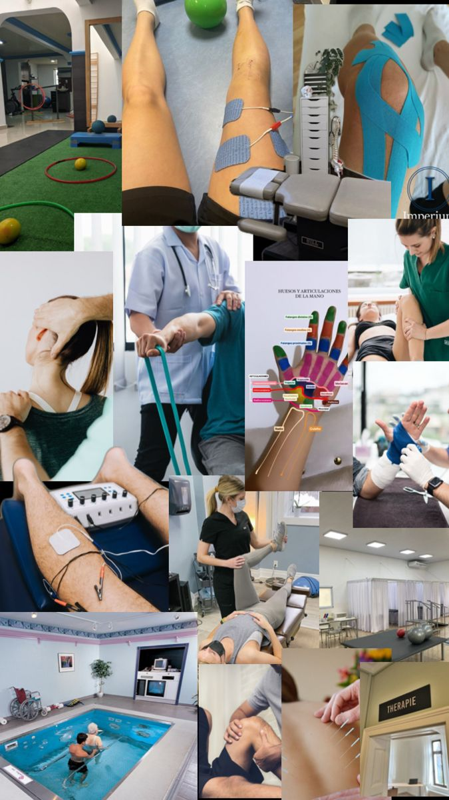
Rehabilitación física personalizada
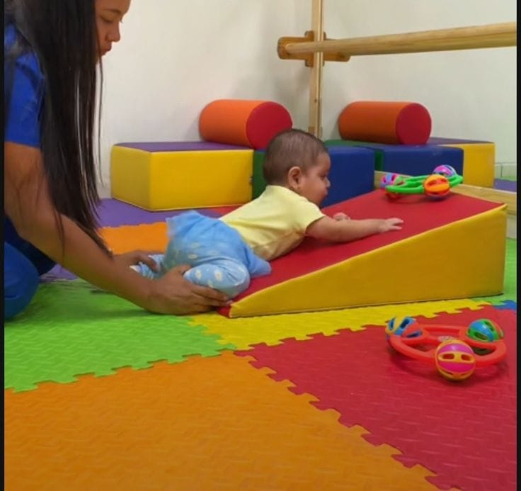
Estimulación temprana
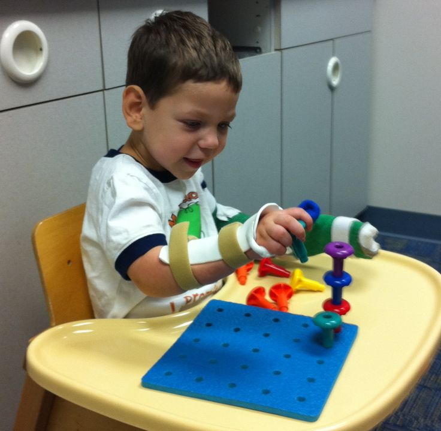
Terapia ocupacional
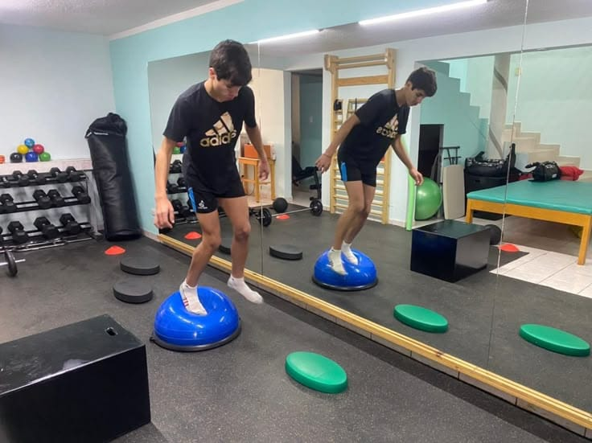
Fisioterapia deportiva
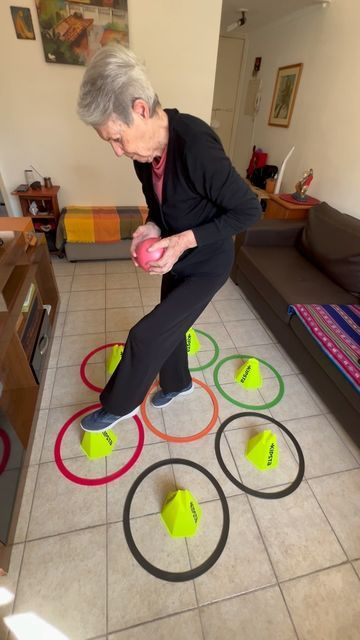
Fisioterapia geriátrica
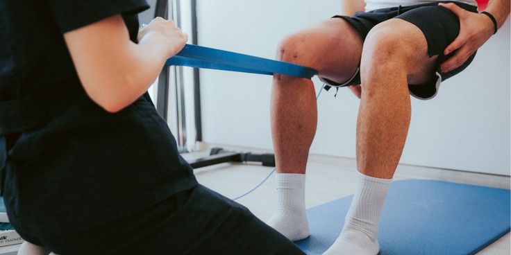
Rehabilitación post operatoria
Formación y Certificaciones
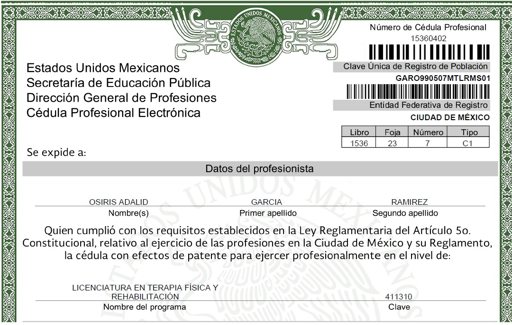
Curso de Rehabilitación Física
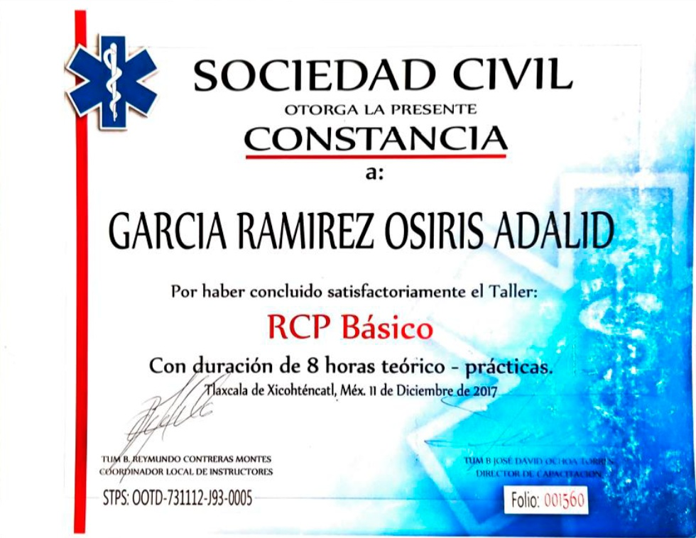
Especialización en Masoterapia
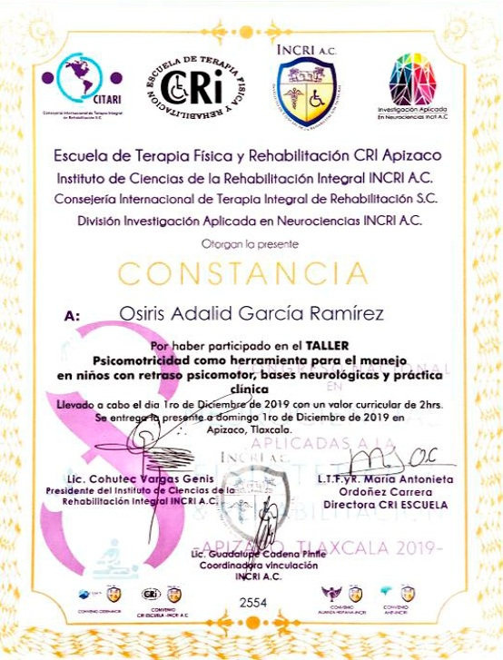
Prevención y Tratamiento de Lesiones
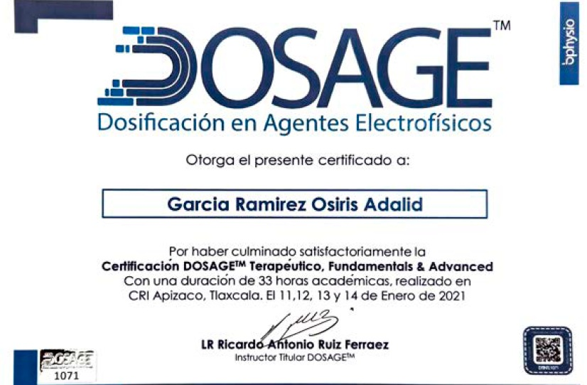
Terapia Manual Avanzada
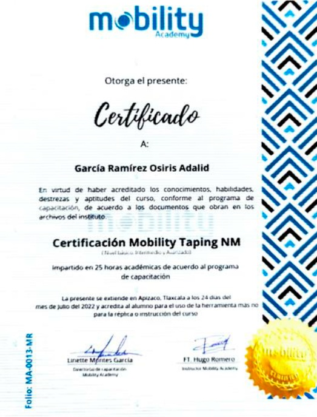
Actualización Profesional en Rehabilitación
Agenda tu cita
Atención previa cita · Contáctame directamente por WhatsApp
Contactar por WhatsApp